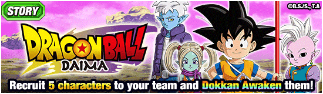

DATA DE LANÇAMENTO: 29/10/2025
Alguém me explica pq q a PANZY F2P é melhor que o Goku Blue Kaioken TEQ? 💀
Assim como o Glorio STR, a Panzy é bem restrita ao time dos heróis do Daima, precisando de aliados que sejam Super Class, "Demonic Power" e "Dragon Ball Seekers"
Caso as restrições sejam cumpridas, ela tem 80% de chance de desvio e um dano bem alto, além de dar vários debuffs no oponente
É certamente uma F2P bem útil.
Nota dos Links:
03/10
Nota das Categorias:
04/10
CARD ADQUIRIDO NO EVENTO:

Você chegou ao fim dessa página!
Obrigado por ler tudo, e fica a vontade pra ver outras